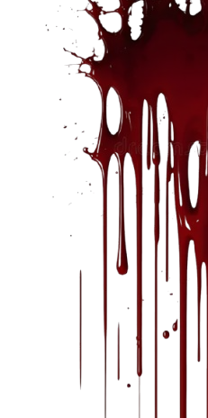
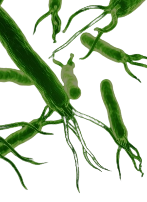
El Virus De La Gripe Verde
El virus de la Gripe Verde es un patógeno desconocido de propagación inmediata.
A diferencia de una
gripe común, no provoca fiebre ni síntomas tradicionales, sino una alteración neurológica
extrema:
pérdida de razón, agresividad descontrolada y resistencia física anormal.
El contagio ocurre por contacto directo con fluidos infectados y la incubación es prácticamente
instantánea. No existe tratamiento ni cura. Solo un reducido grupo de individuos presenta
inmunidad
natural, convirtiéndose en los únicos capaces de resistir el brote y enfrentar a los infectados.
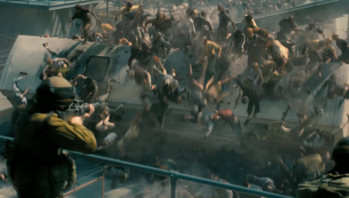
Tipos De Infectados
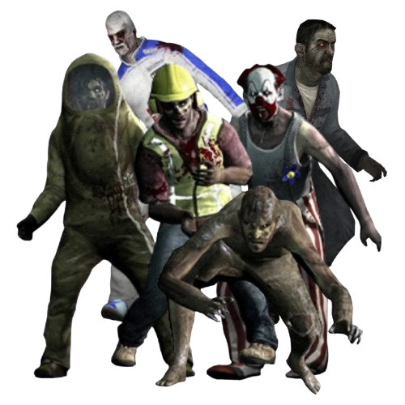
Zombies Comunes
La base del brote. Individuos infectados en etapas tempranas, carentes de raciocinio y autocontrol. Se mueven de forma errática, pero su número los convierte en una amenaza capaz de desbordar defensas. Su fuerza no radica en la habilidad individual, sino en la capacidad del virus para movilizarlos como enjambres coordinados que aplastan a sus objetivos por saturación.
Habilidades:
- Ataque en hordas.
- Agresividad descontrolada.
- Resistencia variable.
⚠Infectados Especiales⚠
Boomer
Una de las mutaciones más inestables del virus. El Boomer es un cuerpo distendido por acumulación masiva de bilis infecciosa. Su objetivo no es el combate directo, sino marcar a los sobrevivientes para atraer a la horda. Al vomitar o al explotar tras la muerte, cubre a las víctimas con fluidos que llaman inmediatamente a decenas de infectados comunes. Su sola presencia es peligrosa debido a su efecto multiplicador en el entorno.
Habilidades:
- Vomitar bilis sobre objetivos.
- Atraer hordas de infectados.
- Explosión de bilis al morir.
Peligro: Medio
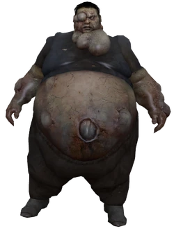
Spitter
Producto de una mutación interna, la Spitter ha sufrido deformaciones visibles que afectan principalmente su mandíbula y sistema digestivo. Genera y expulsa un ácido corrosivo capaz de cubrir amplias zonas, obligando a los sobrevivientes a dispersarse o abandonar posiciones defensivas. No representa un gran riesgo en combate directo, pero su verdadera fuerza es el control del campo de batalla.
Habilidades:
- Escupir ácido corrosivo.
- Cobertura de áreas amplias.
- Forzar reposicionamiento táctico.
Peligro: Medio
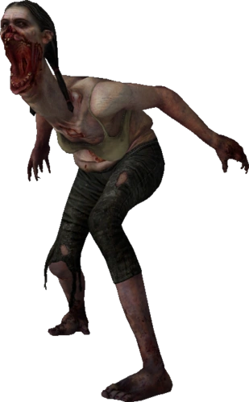
Smoker
El virus alteró de forma drástica su sistema respiratorio. Su torso y cuello están invadidos por tumores y malformaciones que le otorgan una capacidad inhumana: una lengua extensible que utiliza como arma letal de captura. Su función táctica es aislar a los sobrevivientes, arrastrándolos fuera de la formación para facilitar el ataque de la horda. Incluso tras la muerte sigue siendo un riesgo, liberando una nube de humo tóxico que reduce la visibilidad.
Habilidades:
- Proyectar lengua extensible para atrapar.
- Arrastrar objetivos a larga distancia.
- Nube de humo al morir.
Peligro: Medio–Alto
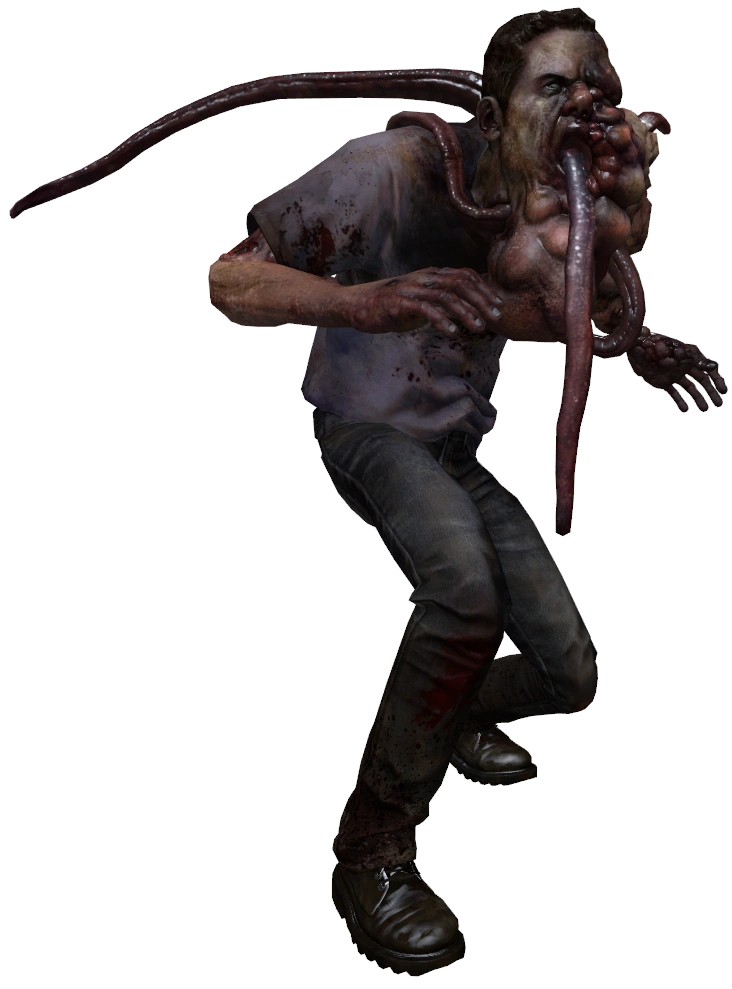
Jockey
Deformado y encorvado, el Jockey es una representación grotesca de la locura. Ríe mientras se abalanza sobre sus presas, aferrándose a ellas con fuerza para dirigirlas hacia zonas peligrosas o lejos de su escuadra. El pasado de este infectado es incierto, pero las características de su comportamiento sugieren trastornos mentales preexistentes amplificados por la infección. Su amenaza principal no es el daño directo, sino la capacidad de separar y exponer a las víctimas.
Habilidades:
- Saltar sobre sobrevivientes.
- Controlar el movimiento de la presa.
- Separar objetivos del grupo.
Peligro: Alto
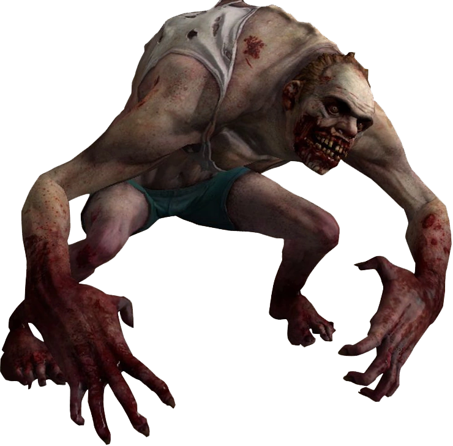
Charger
El Charger es un infectado diseñado por la infección como ariete. Su brazo descomunal concentra toda la fuerza de su mutación, lo que le permite embestir con brutalidad, atrapando a un objetivo y estampándolo contra superficies sólidas. Su cuerpo hipertrofiado lo convierte en una máquina de impacto, utilizada por el virus para romper líneas defensivas y separar a los sobrevivientes.
Habilidades:
- Embestida de gran alcance.
- Atrapar y arrastrar objetivos.
- Estrellar a la presa contra muros o el suelo.
Peligro: Alto
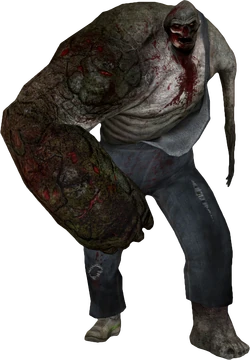
Hunter
El Hunter representa el depredador definitivo. Con agilidad sobrehumana y un cuerpo adaptado para la caza, se lanza desde posiciones elevadas con ataques devastadores que incapacitan al objetivo. Se cree que en vida pertenecía a sectores marginales, reflejado en su vestimenta descuidada y su actitud solitaria. Es uno de los infectados más letales en emboscadas, especializado en atacar cuando el grupo está distraído o desorganizado.
Habilidades:
- Saltos de gran alcance.
- Ataques sorpresa desde altura.
- Inmovilización prolongada de víctimas.
Peligro: Muy Alto
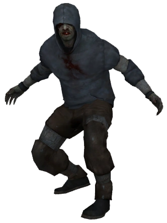
Tank
La cúspide de la infección. El Tank es una mutación de fuerza bruta, un organismo diseñado para destruir cualquier resistencia. Su cuerpo, recubierto de masa muscular hipertrofiada, le otorga resistencia sobrehumana y capacidad de destruir obstáculos. Se mueve con ferocidad y arrasa con todo a su paso, utilizando su entorno como arma al lanzar escombros. Requiere fuego concentrado de todo el equipo para ser neutralizado.
Habilidades:
- Golpes devastadores que lanzan al objetivo.
- Destrucción de obstáculos y vehículos.
- Lanzamiento de escombros a larga distancia.
Peligro: Crítico
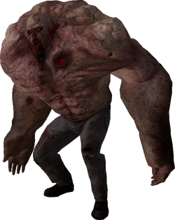
Witch
La Witch es uno de los infectados más enigmáticos. Permanece inmóvil, llorando en la oscuridad, en un estado de sufrimiento perpetuo. No ataca a menos que sea perturbada por ruido, luz o contacto, pero cuando es provocada se convierte en una fuerza letal capaz de incapacitar de un solo golpe. Todo indica que en vida fue una mujer joven, ahora consumida por la infección en un estado casi comatoso. La mejor táctica es evitarla a toda costa.
Habilidades:
- Ataque instantáneo y letal al ser molestada.
- Incapacitación de un golpe.
- Estado pasivo mientras no se le provoque.
Peligro: Crítico
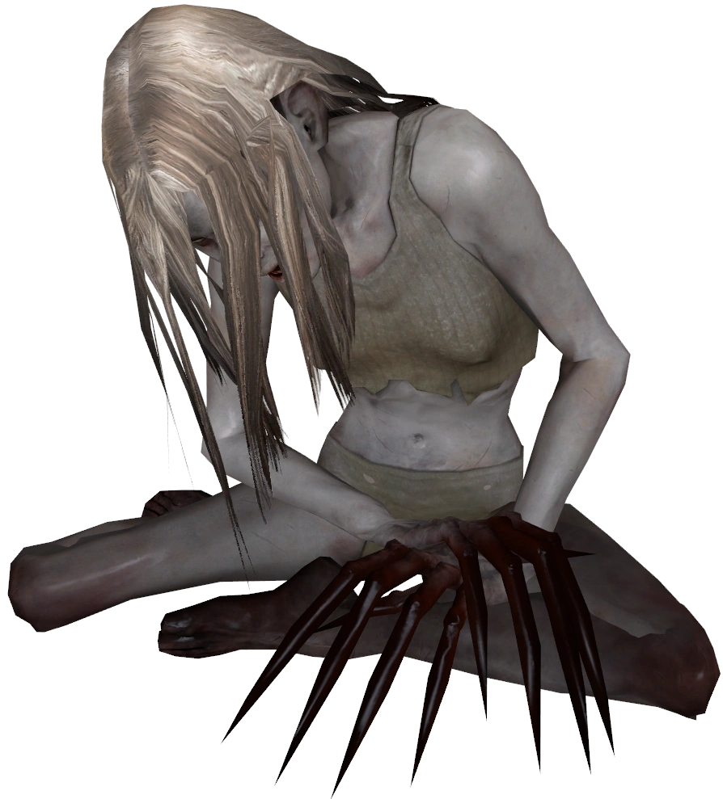